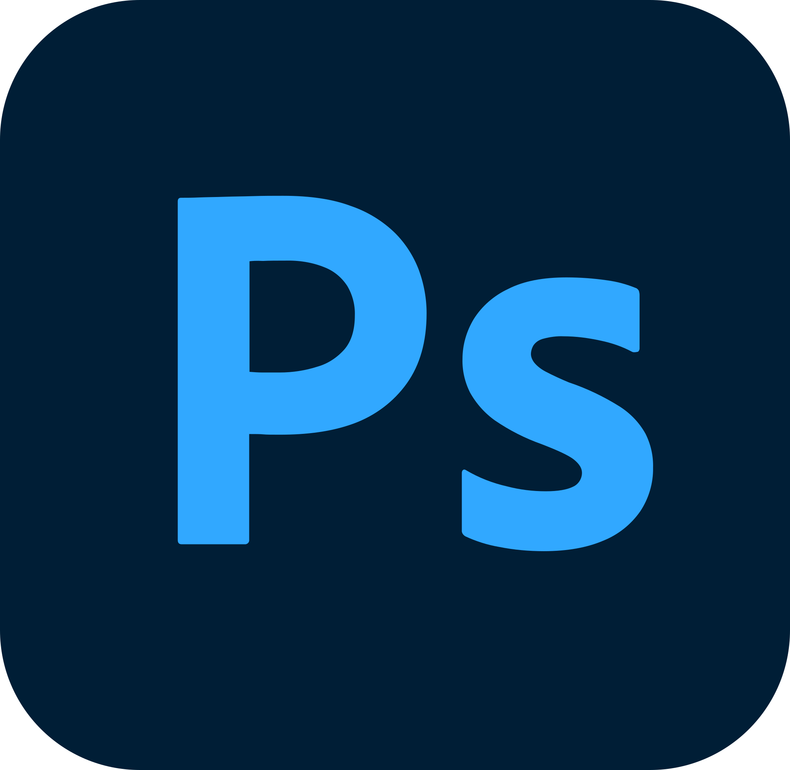

01 / ABOUT
BEYOND
THE RENDER.
3D ARTIST / ART DIRECTOR
想像を、実際に動く世界へ。

TOMOKI TANAKA / JAPAN
BIOGRAPHY / PROFILE
田中 友貴Tomoki Tanaka
1999年生まれ / 歳
3DCGアーティストとして積み重ねた経験を軸に、ゲーム開発におけるアートディレクションにも携わっています。
BACKGROUND ORIGINAL BIOGRAPHY
高校在学中、友人とゲーム制作コンテストに出場し、受賞した事をきっかけにエンタメ業界を志しました。
バンタンゲームアカデミー卒業後、3DCGアーティストとしてVtuberのリアルタイムライブに関わっております。
デザインからモデリング、Unityでのイベント設定やルック調整などの制作を主としつつ、モーションキャプチャスタジオではVicon(Shogun)のオペレーションを担当。
02 / TOOLKIT
Tools & skills.
過去のサイトに掲載した使用ツールを引き継いでいます。
使用年数は当時の記録です。
unity
使用年数: 9年
ClipStudioPaint
使用年数: 7年
Maya
使用年数: 5年

Photoshop
使用年数: 5年
SubstancePainter
使用年数: 5年
Git
使用年数: 5年
ZBrush
使用年数: 3年
Blender
使用年数: 3年
VICON Shogun
使用年数: 3年
MotionBuilder
使用年数: 3年
UnrealEngine
使用年数: 1年
03 / NEXT PROJECT